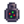
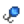

Tackle
Tackle can be attached to the Iridium Rod or Advanced Iridium Rod to make it easier to catch fish. Most recipes unlock as the player's fishing level increases. Most tackle can also be purchased from the Fish Shop once they are unlocked. Tackles have a durability bar, which decreases on use. Tackle wears out and disappear after 20 nibbles by fish (indicated by "HIT" popping up on screen). Tackle does not wear out when catching non-fish items (such as Algae, Jelly, Seaweed, Trash, and special items).
If the player uses a fishing rod with the Preserving enchantment, for each fish nibble there is a 50% chance for tackle to not be consumed. If the player uses an Advanced Iridium Rod with two tackles equipped, these chances are rolled separately, so it is possible for the durability of only one of the tackles to be consumed.
Only the Iridium Rod or the Advanced Iridium Rod can equip tackle. The Iridium Rod can only attach one tackle at a time, while the Advanced Iridium Rod can attach two. To attach tackle, left-click on the tackle, then right-click on the rod. To remove tackle, first right-click to remove any bait, then right-click to remove the tackle. For an Advanced Iridium Rod, the left tackle will be the first one removed.
Tackle does not stack in inventory or chests; each tackle takes up one inventory slot.
Tackle
| Image | Name | Description | Notes | Purchase | Crafting |
|---|---|---|---|---|---|
| Spinner | The shape makes it spin around in the water. Slightly increases the bite-rate when fishing. | Reduces maximum delay before a nibble by 3.75 seconds.
Unlocks at Fishing level 6 |
|||
| Dressed Spinner | The metal tab and colorful streamers create an enticing spectacle for fish. Increases the bite-rate when fishing. | Reduces maximum delay before a nibble by 7.5 seconds.
Unlocks at Fishing level 8; can be found in fishing treasure chests beginning at Fishing level 6 |
|||
| Trap Bobber | Causes fish to escape slower when you aren't reeling them in. | The progress bar at the right decreases 33% slower when the fish isn't within the fishing bar.
Unlocks at Fishing level 6 |
|||
| Cork Bobber | Slightly increases the size of your "fishing bar". | The increase of the bar size is a constant 24 pixels.
Unlocks at Fishing level 7 |
|||
| Lead Bobber | Adds weight to your "fishing bar", preventing it from bouncing along the bottom. | This is perhaps not helpful as it is easy to prevent the bar from bouncing by clicking to slow it down right before it hits the bottom.
Unlocks at Fishing level 6 |
N/A | ||
| Treasure Hunter | Fish don't escape while collecting treasures. Also slightly increases the chance to find treasures. | Increases treasure chance by 5%. While collecting a treasure chest, the progress bar will remain steady if the fish isn't within the fishing bar. If it is, it will still go up like usual. The player will get a perfect catch as long as the fish is only outside of the fishing bar while a treasure chest is being collected.
Unlocks at Fishing level 7 |
|||
| Barbed Hook | Makes your catch more secure, causing the "fishing bar" to cling to your catch. Works best on slow, weak fish. | Makes the player's fishing bar "cling" to the fish, automatically going up or down to try to stay on the middle of the fish. It will only try to move when the bar is actually on the fish. The player can still manually control the bar but it's rather difficult, especially with slower fish. The more the fish darts up and down, the easier it is to move the fishing bar manually and the less effective the Barbed Hook is.
Unlocks at Fishing level 8 |
|||
| Curiosity Lure | Increases your chance to catch rare fish. | Most useful when trying to catch fish that spawn rarely, such as the Ice Pip, Mutant Carp, and Legend.
Can be obtained through breaking boxes and barrels in the Quarry Mine, Skull Cavern, or Volcano Dungeon or dropped from Mummies and special monsters in Skull Cavern |
N/A | N/A | |
| Quality Bobber | Boosts the quality of fish that you catch. | Increases the quality of the fish caught by one level. This is an alternative way to catch iridium quality fish, aside from getting a perfect catch.
Can be crafted by the recipe received from Willy after completing the Juicy Bugs Wanted! special order |
N/A | ||
| Sonar Bobber | Shows what fish is on the line before it's caught. | Reveals the fish being hooked while the player is hooking the fish.
Unlocks at Fishing level 6 |
Stacking
When using the Advanced Iridium Rod with two tackles, the tackle effects will always stack if the tackles are different. If the tackles are the same, the tackle effects may stack depending on the tackle. Below is a list of the effects when two of the same tackle is equipped:
- 2 Spinners: Reduces maximum delay before a nibble by 7.5 seconds, double the amount of time as with 1 Spinner.
- 2 Dressed Spinners: Reduces maximum delay before a nibble by 15 seconds, double the amount of time as with 1 Dressed Spinner.
- 2 Trap Bobbers: The progress bar at the right decreases 50% slower when the fish isn't within the fishing bar, compared to 33% with 1 Trap Bobber.
- 2 Cork Bobbers: Increase the bar size by 48 pixels, double the amount as with 1 Cork Bobber.
- 2 Lead Bobbers: Prevents the bar from bouncing even more compared to 1 Lead Bobber.
- 2 Treasure Hunters: Along with also preventing the fish from escaping when collecting treasures, treasure chance is increased by 10%, double the chance as with 1 Treasure Hunter.
- 2 Barbed Hooks: Makes the fishing bar cling to the catch even more compared to 1 Barbed Hook.
- 2 Curiosity Lures: Provides no additional benefit compared to using 1 Curiosity Lure.
- 2 Quality Bobbers: Increases the quality of the fish caught by 2 levels, double the amount of levels as with 1 Quality Bobber.
- 2 Sonar Bobbers: Provides no additional benefit compared to using 1 Sonar Bobber.
Profitability
Unlike most items obtained by crafting of metals and wood in the game, tackle can be sold (both to Willy and via the Shipping Bin). Several of these crafting recipes are actually profitable, depending on whether or not the player has the Blacksmith profession:
 Trap Bobber (+
Trap Bobber (+ 120g if the player doesn't have the Blacksmith profession, +90g with Blacksmith)
120g if the player doesn't have the Blacksmith profession, +90g with Blacksmith)- Barbed Hook (+70g if the player doesn't have the Blacksmith profession, results in a loss with Blacksmith)

Sonar Bobber (+30g if the player doesn't have the Blacksmith profession, results in a loss with Blacksmith)
Spinner (+10g if the player doesn't have the Blacksmith profession, results in a loss with Blacksmith)- Cork Bobber (+105g, though pressing Slime into a Slime Egg and processing hardwood in the Wood Chipper results in slightly more profit on average.)
Secret
| Details |
| Putting Lucky Purple Shorts in the tackle slot of a fishing rod changes the bobber style to a unique Lucky Purple Shorts bobber. If placed in the first slot of an Advanced Iridium Rod, the shorts prevent the tackle in the second slot from losing durability. This cannot be done with Trimmed Lucky Purple Shorts. |
History
- 1.4: Tackles can now be attached to fishing rods directly from treasure chests. Reduced sellback price for used tackle, so it can no longer be sold to Willy for full price. Fixed bug where tackle durability could be restored by right-clicking the tackle in inventory.
- 1.5: Tackle no longer loses endurance when catching junk. Using a Fishing rod with the Preserving enchantment now gives a 50% chance for tackle to not be consumed. Added Curiosity Lure and Quality Bobber.
- 1.6: Added Sonar Bobber. Advanced Iridium Rod introduced which allows two tackles to be equipped at once. Added secret.